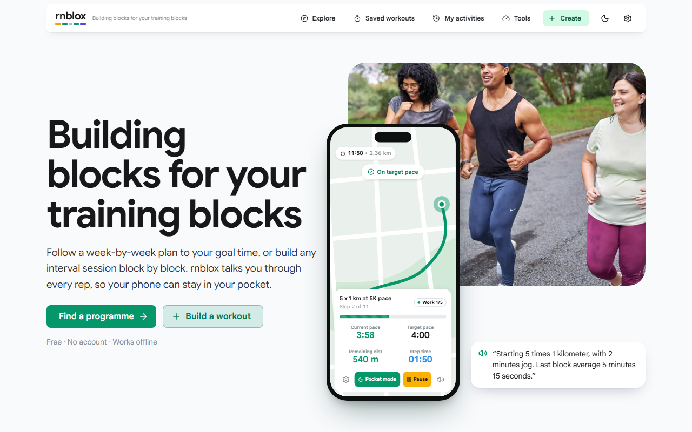
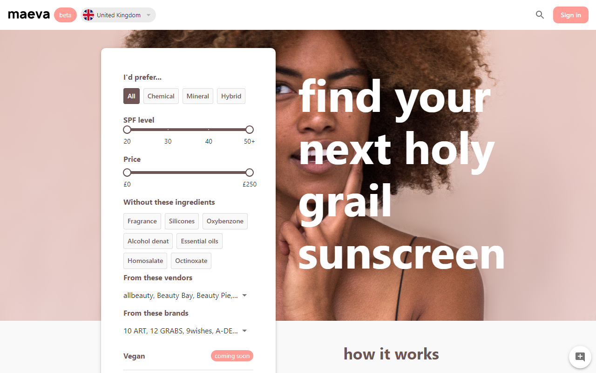
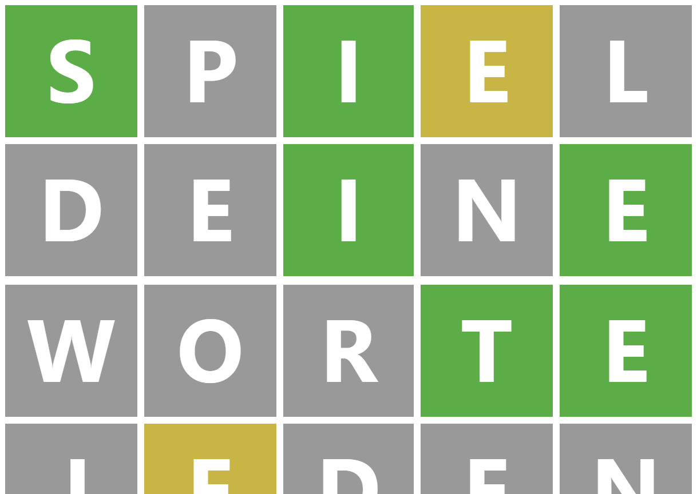
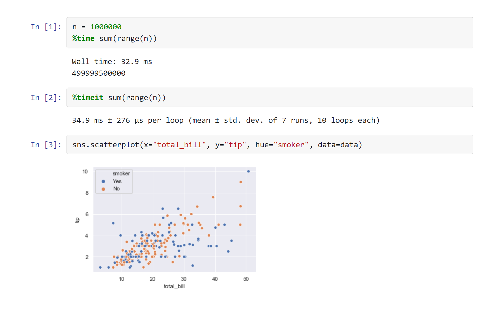
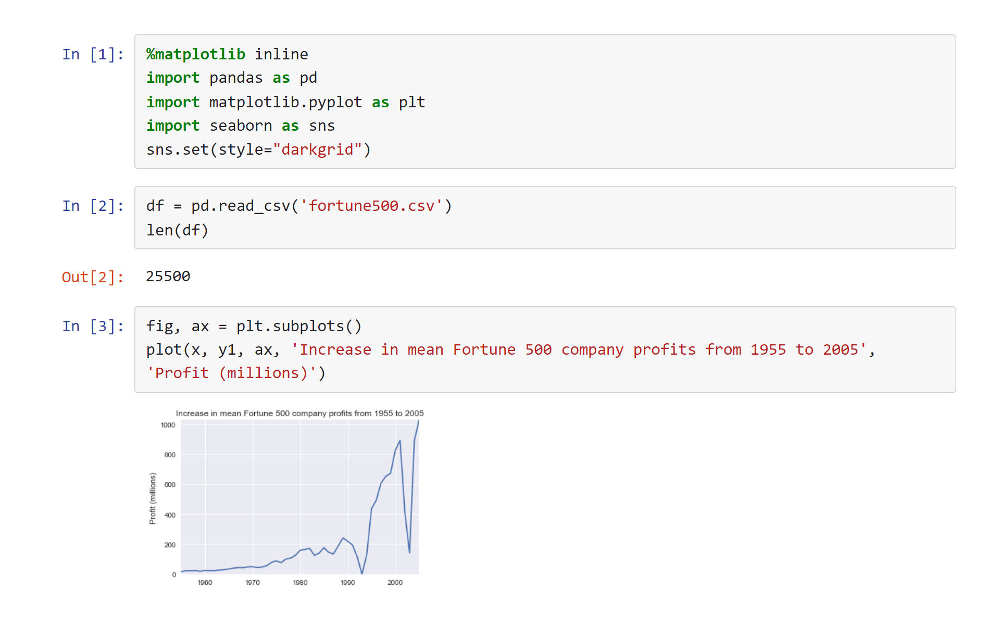
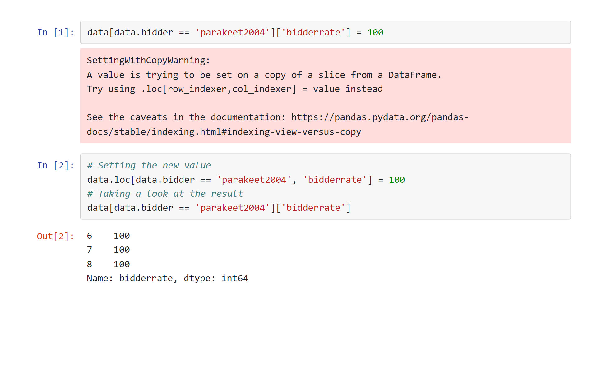

Complex problems,simple solutions.
Hello, I'm Ben Pryke, Senior Lead Engineer.
I build simple solutions to complex problems by working at the intersection of engineering and leadership. By connecting big ideas to project details, I strive to simplify implementations, polish user experiences, and uplift the people and technology around me.
- Lifelong Programmer
- Double co-founder
- #1 on Google for 10 years
Technology is about people first and code second.
As writer of the world's most popular Jupyter Notebook tutorial since 2017, I am an expert in communicating technical concepts with a variety of audiences. I confidently lead long-term, complex technical deliveries, plan multi-stage projects, shape roadmaps, connect teams and disciplines, and elevate my team.
After starting my career full stack with Python and AI, most of my recent experience is in the TypeScript/React ecosystem. I have been writing code for well over two decades, have co-founded two businesses, and have a decade of experience in high-performing FinTech teams.
I'm working towards roles like Executive Director, Head of Engineering, CTO.
Recent projects.

rnblox: Building Blocks for Your Training Blocks
Strava's GPS tracking and voice cues weren't enough for me, so I built my own and took 5 minutes off my race day half marathon PB.
Live voice and tone cues coach you through every rep, so your phone can stay in your pocket, while GPS tracking discards coarse fixes and measures distance along the route.

Maeva: The SPF Search Engine
Since 2020, I have worked with co-founder Natalie O'Neill to build Maeva, a product search engine that begins with a niche focus on the sunscreen market.
At Maeva, we believe that online product search no longer meets user needs. No company lets you search across all vendors with advanced filters that truly fit the product category. We value consistent, high quality data accessible via a wide range of tailored filters.
I am responsible for the technical implementation of the product vision, including the cloud architecture, data model, data pipeline, and user interfaces.

Wortle: German Wordle
German version of the popular game Wordle with German keyboard, desktop and mobile support, light and dark mode, and more; built predominantly in a day.
Published articles.

Advanced Jupyter Notebooks: A Tutorial
Popular with serious Jupyter users, this is an adventure through scripted execution, reporting pipelines, working with databases, and much more.

Jupyter Notebook for Beginners: A Tutorial
#1 Jupyter Notebook tutorial on Google since 2017. Exploring the basics of creating a Jupyter Notebook, the important terminology, and how easily notebooks can be shared and published online.

Understanding SettingwithCopyWarning in pandas
A deep dive into everything there is to know about the most common (and most misunderstood) warning in pandas.